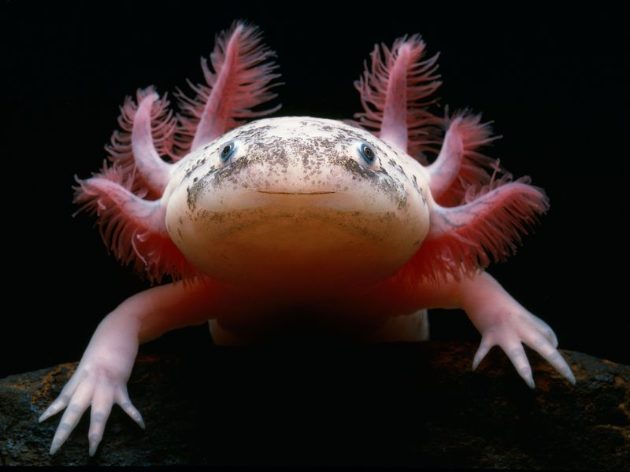

Axolotl

(Avalon / Photoshot License / Alamy)
It can regenerate entire limbs!
- Scientific Name: Ambystoma mexicanum
- Average Length: 15–45 cm
- Average Lifespan: 10 to 15 years
- Habitat: Found exclusively in a lake near Mexico City
According to an Aztec legend, this “water monster” was a god who disguised himself as a salamander to avoid sacrifice. Nowadays, it is critically endangered in the wild because of the pollution and urban sprawl that threaten its habitat in the Mexican Basin.